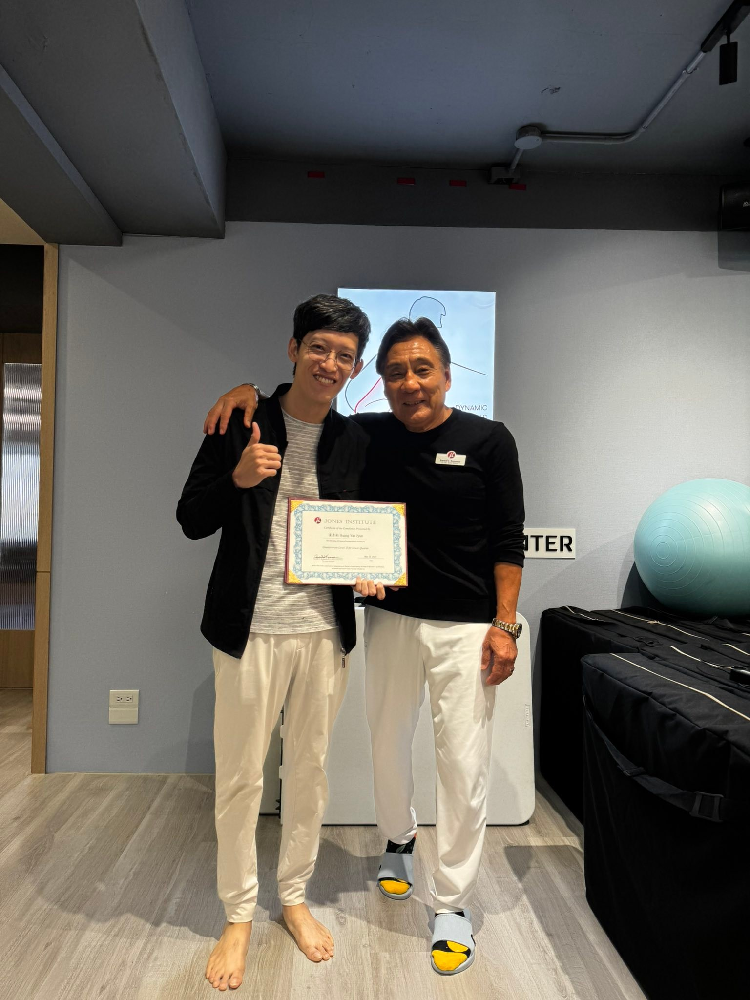
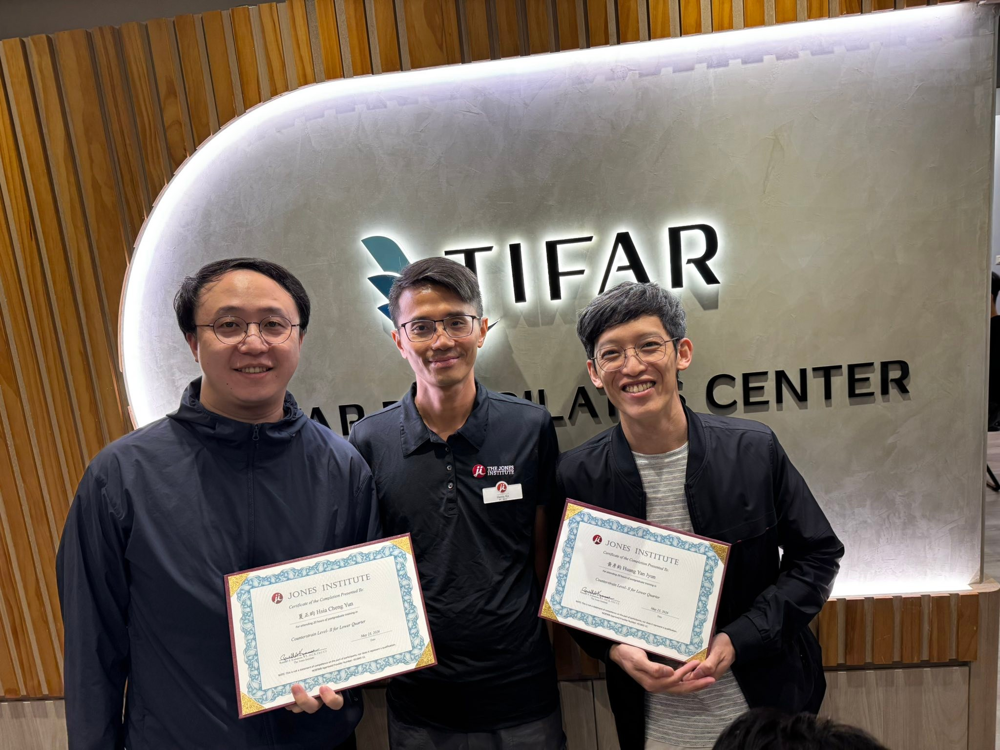
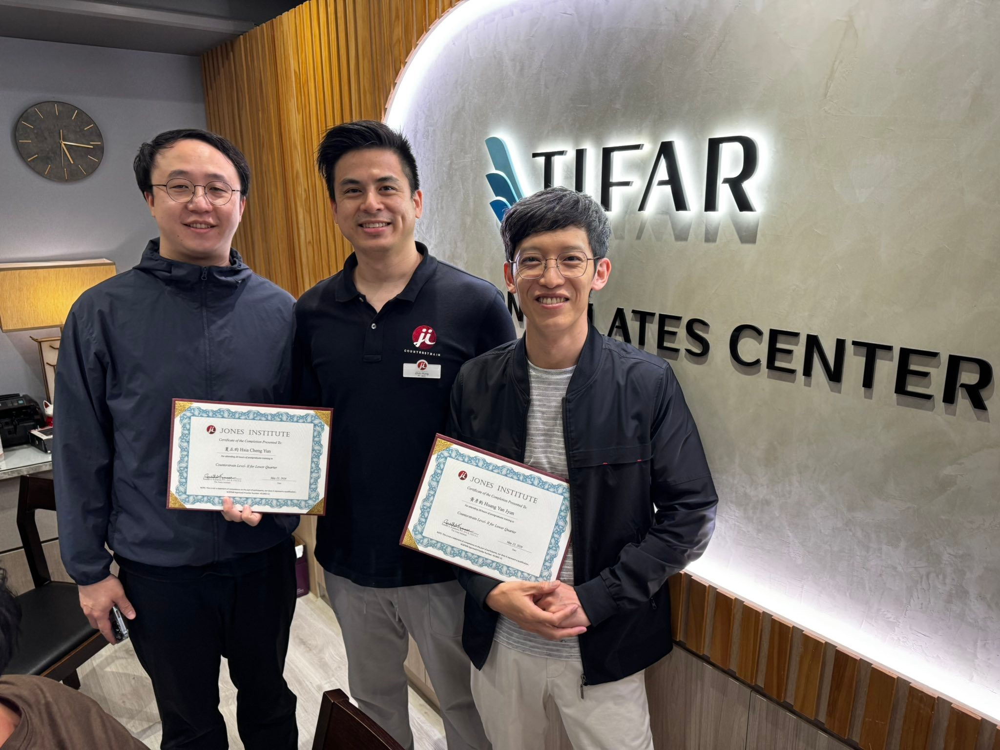
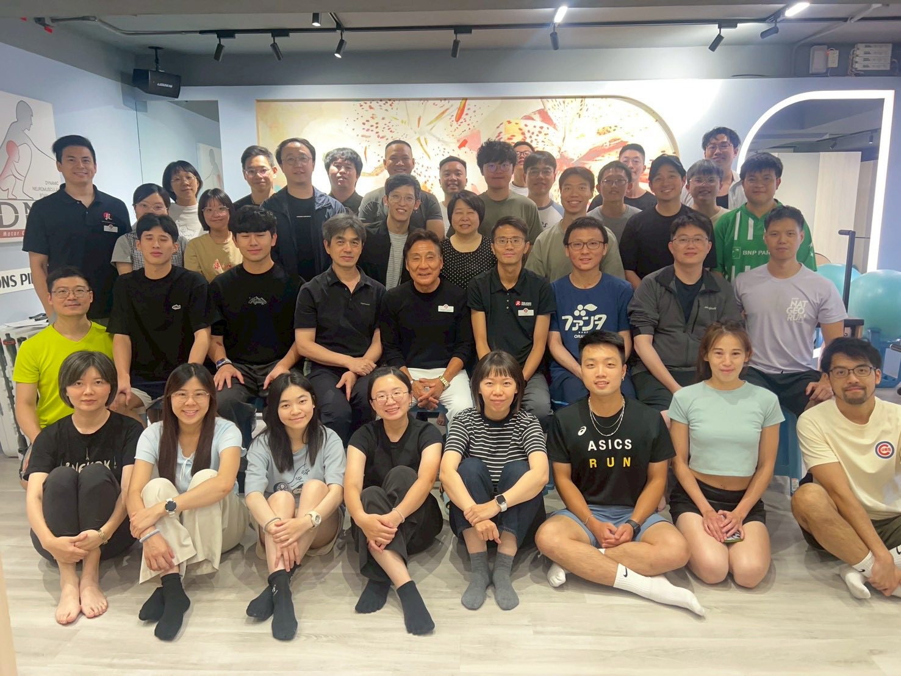

CounterStrain Level 2-Lower Limb
CounterStrain Level 2-Lower Limb
SCS一直放在必修清單裡，這次總算把下肢補上了！
Randall老師的指導下的脈動真的明顯到爆炸，沒感覺的點位被老師帶著做，都明顯感覺到有脈動🤯🤯🤯
練功夫還是得好好從蹲馬步出拳踢腿的基本功開始，本來以為會的，其實都還有很大的進步空間！
感謝課堂上助教們的協助，也感謝一起練習的夥伴夏主任，三天的學習路上除了學習也多了許多歡樂氣氛😆😆😆
這次班上多了好多中醫同行，表示越來越多中醫師接觸到這門技術，開闊視野互相交流，對醫病都是好事！
Randall老師最後的頭顱發功實在太扯，準備手刀開搶Level3的頭顱！在這之前本來好好整合一下上下肢與加緊磨練一下了！



